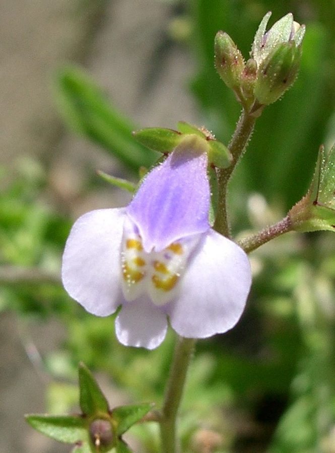

माज़ुसJapanese Mazus
Mazus pumilus · Linderniaceae · FLR-0234

- Scientific name वैज्ञानिक नाम
- Mazus pumilus (Burm. f.) Steenis
- Family कुल
- Linderniaceae
- Hindi हिंदी
- माज़ुस
- Local names स्थानीय नाम
- mazus, japani mazus, japanese mazus
- Status here यहाँ की स्थिति
- native
- Movement आवागमन
- Resident, here all year
- Known from कहाँ दर्ज
- Others have published records from the wider Awadh–Purvanchal plain, none yet from Basti–Ayodhya अवध–पूर्वांचल से दूसरों के प्रकाशित अभिलेख, बस्ती–अयोध्या से अभी नहीं
- IUCN IUCN
- not evaluated
- Review समीक्षा
- audited and independently read
When to look कब देखें
Expected mainly in January, February, March, April, May, October, November, December. मुख्यतः जनवरी, फ़रवरी, मार्च, अप्रैल, मई, अक्टूबर, नवंबर, दिसंबर में अपेक्षित।
Uses and possibilities उपयोग और संभावनाएँ
Drawn from the documented uses in the profile below, where each is labelled traditional, current or a research lead. All uses →
Tell it apart from इनसे अलग पहचानें
माज़ुस / Japanese Mazus
Mazus pumilus (Burm. f.) Steenis — Linderniaceae
माज़ुस — खेतों में पानी के रास्तों और धान की पाली में उगने वाला छोटा पौधा जिसके गुलाबी-बैंगनी फूल सर्दियों में दिखते हैं। पत्तियाँ छोटी, गोल, एक दूसरे के विपरीत। फूल कृत्रिम मुँह जैसे (snapdragon), बहुत छोटे। भारत और पूर्वी एशिया का पौधा, जो अब भारत भर में पानी वाली जमीनों पर आम है।
Quick Identification त्वरित पहचान
| Feature | Description |
|---|---|
| Plant form | Small, creeping to ascending annual, 10–30 cm, with fine hairs |
| Leaves | Opposite, obovate to spatulate, 0.5–1.5 cm, blunt-tipped, entire margins |
| Flowers | Small, pale purple to pink, bilabiate (2-lipped), 4–6 mm across, in terminal racemes |
| Stem | Slender, hairy, rooting at lower nodes |
| Fruit | Small, globular capsule, 2–3 mm |
| The test | Small herbaceous plant with opposite leaves and tiny pink-purple flowers in wet fields |
Field tip: Look in paddy fields and along rice bunds in winter for a low-growing, hairy plant with opposite leaves and clusters of small pink flowers. Often overlooked because of its small size. The bilabiate flowers resemble a tiny snapdragon.
हिंदी — कैसे पहचानें: पानी वाली जगह का छोटा पौधा। पत्तियाँ विपरीत, छोटी, गोल। गुलाबी-बैंगनी छोटे फूल।
Morphology आकारिकी
Biometrics (typical measurements in East and Southeast Asian wetlands):
| Measurement | Range |
|---|---|
| Plant height | 10–30 cm |
| Leaf length | 0.5–1.5 cm |
| Leaf width | 0.3–0.8 cm |
| Flower length | 4–6 mm |
| Capsule diameter | 2–3 mm |
Stem: Slender, herbaceous, with fine spreading hairs, especially in lower portions. Lower nodes root readily where they touch moist soil.
Leaves: Opposite, simple, sessile or short-petioled, obovate to spatulate, blunt at the apex, entire, hairy on both surfaces. Venation is pinnate.
Flowers: Small, bilabiate (two-lipped), pale pink to lavender, densely hairy on the exterior. The upper lip is 2-lobed; the lower lip is 3-lobed with a yellow nectar guide. Flowers are arranged in terminal racemes. Blooming is continuous through the cool season.
Fruit: A small, globular to ovoid capsule; the calyx persists. Seeds are very small, numerous, and dust-like.
हिंदी: पत्तियाँ विपरीत, छोटी और नरम। फूल दो होंठ वाला (2-lipped), सूक्ष्म।
Behaviour & Ecology व्यवहार और पारिस्थितिकी
Mazus pumilus is a cosmopolitan winter annual of tropical and subtropical Asia. It grows in the cool season (October–May) in paddy fields, on bunds, and in other disturbed wet habitats. The plant is a low-growing herb that does not compete strongly with standing crops, so it is rarely considered a serious pest. It tolerates waterlogging and is often the first coloniser of freshly puddled rice fields.
The plant is self-compatible and is pollinated by small insects, including tiny bees and flies. Seeds are short-lived and germinate prolifically after rains.
हिंदी: यह ठंडी ऋतु में जल वाली जमीन पर उगता है। अकेले या कुछ अन्य छोटे पौधों के साथ।
Life Cycle / Phenology जीवन चक्र
| Month / season | Event |
|---|---|
| September–November | Seed germinates after monsoon rains and with falling temperatures |
| December–February | Vegetative growth; plant forms low rosette |
| February–April | Flowering in profusion |
| April–May | Fruiting; seed ripening and dispersal |
Seeds are short-lived and do not persist in soil beyond one or two years. The plant is an obligate winter annual in eastern UP.
हिंदी: अक्टूबर-नवंबर में अंकुरण, दिसंबर-अप्रैल में फूल, मई तक बीज।
Associated Species / Interactions संबंधित प्रजातियाँ
- Rice field associates: Found with other small winter weeds in paddy fields, such as Scarlet Pimpernel and chickweed species.
- Field margin companions: Often occurs on damp rice bunds with low grasses and sedges.
- Seed dispersal: Spread by water movement and on mud carried by farm machinery.
Pests and Diseases कीट और रोग
- No serious pests or diseases; the plant is generally healthy.
- Fungal rots may occur in very humid or waterlogged conditions.
Agricultural / Human Relevance कृषि प्रासंगिकता
As a weed:
Mazus pumilus is a minor weed of paddy cultivation in eastern UP. Unlike the major rice pests, it does not significantly reduce yield because of its small stature and short growing season. It is easily controlled by hand-weeding or by the normal course of paddy management (high water levels, transplanted rice).
Traditional and cultural notes:
No traditional medicinal or ethnobotanical use is recorded for this species in India. In East Asia it has been used in traditional Chinese medicine as a mild diuretic, but this use is not established in the subcontinent.
Today. The plant is a ubiquitous winter annual in irrigated cultivation across the Indo-Gangetic plain.
Research direction (a lead, not a result). Mazus pumilus is a tropical-origin species in eastern UP; understanding its phenology and the factors controlling its seed dormancy could clarify why certain winter weed communities shift in composition from year to year.
हिंदी: धान की खेती में आम छोटा पौधा, पर गंभीर समस्या नहीं। हाथ से या पानी से निकल जाता है।
Expected Locally स्थानीय रूप से अपेक्षित
Not a field record. Written from published accounts for eastern Uttar Pradesh. No confirmed local sighting yet — if you have seen it, that is what the atlas needs.
अभी तक स्थानीय पुष्टि नहीं। यह विवरण प्रकाशित स्रोतों से है, किसी अवलोकन से नहीं।
To be expected in paddy fields and along rice bunds throughout Basti district from December to April. GBIF holds published records from the wider Awadh–Purvanchal plain, none yet from Basti–Ayodhya. A first record would be a photograph of the plant in situ with place and date, submitted via the About page.
Distribution वितरण
Global range: Tropical to subtropical Asia, from India through Southeast Asia to Japan and parts of Australia. Native to mainland and island Southeast Asia.
In India: Widespread in paddy fields and wet habitats of the plains, especially the Indo-Gangetic plain and the eastern states.
In Uttar Pradesh: Common in paddy cultivation and wet grasslands across eastern UP.
In Basti district / eastern UP: Expected in paddy fields and wet habitats; records from GBIF in the wider region but not yet confirmed locally.
Research Questions शोध प्रश्न
Anyone can investigate these | कोई भी इन प्रश्नों की जाँच कर सकता है
- In how many rice fields of your village does Mazus appear, and does it appear every year or only in certain years? — Walk the paddy fields in January; map its presence; compare across three seasons.
- Do farmers in your village name this plant, and do they think of it as a weed or as a harmless minor plant? — Ask ten farmers; record their name for it and their opinion.
- How long are Mazus seeds viable in rice field mud, and do they germinate if stored dry for a year? — Collect seed; store samples dry and wet; test germination every month.
- Which small insects visit the flowers of Mazus when it is in bloom in winter? — Observe a flowering plant for 30 minutes in the morning; record the visitors.
- Does Mazus seedling emergence differ between hand-puddled fields and mechanically puddled fields? / क्या हाथ से और मशीन से गहरी की गई धान की खेती में माज़ुस का अंकुरण अलग होता है? — Monitor seedling emergence in both field types.
Similar Species मिलती-जुलती प्रजातियाँ
| Species | How to tell apart | हिंदी |
|---|---|---|
| Scarlet Pimpernel (Lysimachia arvensis) | Leaves more rounded with red dots; flowers solitary in axils, not in racemes; larger overall | लाल बिंदु वाली पत्तियाँ, बड़े फूल |
| Lindernia crustacea (Lindernia crustacea) | Leaves more elongate; flowers smaller, mostly white; firmer plant | और भी छोटा, सफेद फूल |
| Veronica species | Leaves broader; flowers blue or white with white centre; not in rice fields typically | नीले-सफेद फूल |
Field rule: A tiny, hairy plant with opposite rounded leaves and pale purple-pink bilabiate flowers in clusters, growing in wet rice fields in winter, is Mazus pumilus.
Taxonomy & Classification वर्गीकरण
Original description. Originally described as Herpestes pumilus by Burman f. (1768) in Florae Indica, and transferred to Mazus by Steenis (1949). The epithet pumilus means "dwarf".
Subspecies. Monotypic — no subspecies currently recognised.
Family and order placement. Linderniaceae (formerly placed in Scrophulariaceae), order Lamiales. The genus Mazus holds about 30 species, mostly of East Asian origin.
Phylogenetic notes. Mazus pumilus is closely related to other East Asian Mazus species. Recent molecular work supports its placement in Linderniaceae as now defined.
IUCN status rationale. Not evaluated. Widespread in cultivation; not assessed.
Photo Gallery फोटो गैलरी
Photos needed आवश्यक फोटो
- [ ] Whole plant in paddy field (पूरा पौधा)
- [ ] Close view of opposite leaves (पत्तियाँ)
- [ ] Flowers in raceme (फूलों के समूह)
- [ ] Seed capsules (फल)
No photos yet — add field photos to media/species/japanese_mazus/ and run node scripts/sync_photos.js.
References संदर्भ
- Burman f., N.L. (1768). Florae Indica. Amsterdam, p. 122. [original description as Herpestes pumilus]
- Steenis, C.G.G.J. van (1949). A revision of the Linderniaceae of the Netherlands-Indies. Blumea 6: 1–97.
- Duthie, J.F. (1903). Flora of the Upper Gangetic Plain and of the Adjacent Siwalik and Sub-Himalayan Tracts. Government Printing, Calcutta.
- Hooker, J.D. (1872). The Flora of British India, vol. 4. L. Reeve, London.
- Schönland, C.M. (1895). Linderniaceae and Scrophulariaceae: Contributions toward a monograph. Das Pflanzenreich 6: 1–476.
- GBIF Occurrence Data — Mazus pumilus, India (2026).
Source file: species/flora/crops_associated/japanese_mazus.md